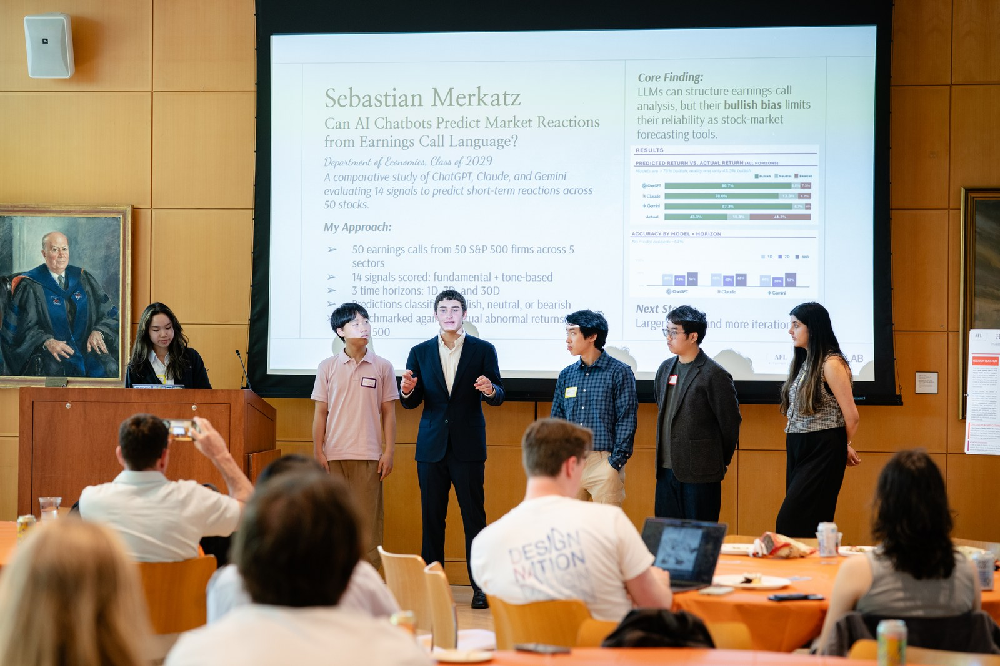

Hong Kong, a harp, and how I ended up in product.
People ask how a psychology major ended up running product. The honest answer starts four years before I declared the major. It has more to do with moving countries and singing in a group than with anything I learned in a lecture.
I moved from Hong Kong to a boarding school in rural New Jersey when I was fifteen. Before that I went to an all-girls Catholic school in one of the densest cities in the world. After that I was in Blairstown, population under six thousand.
It was culture shock. I had to adapt to a new language, a new academic system, and social norms nobody had written down anywhere. I also had to perceive race and gender for the first time, since in Hong Kong nobody had ever asked me to.
What I took from those years is that people come from different stories and are still held together by the same values. That became the working assumption behind every user interview I have run since: the person across from me wants something reasonable and I have not understood it yet.
The harp, and waiting alone
I started harp in Hong Kong in 2009 with Jennifer Ho, then studied with Judy Ho until I left. I competed a lot. Fourth at the Hong Kong International Harp Competition in 2018, against more than a hundred harpists. Fourth at the American Harp Society national competition. First at the New Jersey Intergenerational Orchestra concerto competition in 2022.
Harp is fun and it is very much a solo instrument. I practiced alone. In orchestra I wait a lot, alone, counting rests until my part comes in. I did not get to work with a team and improve together, since the feedback loop was a judge and a score sheet months apart.
The exception was the Symphony Orchestra Student Editorial Board at Blair, where I was the student leader acting as the bridge between the student musicians and the adult directors. Two groups wanted the same concert and could not hear each other. I sat in the middle and translated.
Singing with other people
At Princeton I joined the Katzenjammers, the oldest co-ed a cappella group in the Ivy League, and I am now its president. I learn technique and musicality from my friends, we work pieces until they hold, and we get better at the same time instead of separately.
We also run a business. We sell our music to fund tours, and the president does the outreach.
Four things I changed. I turned open house auditions into blind dates. People pick the song we sing them from a prompt instead of a title, so "a romantic night abroad" gets them "A Nightingale Sang in Berkeley Square." I started a brunch for new members, since bonding was only ever happening at rehearsal and rehearsal is work. I set up informal performances with other clubs, which got us in front of people who would not have come to a concert. And I ran aggressive outreach to New Jersey clients, building the relationships that turn one gig into a standing one.
Auditions, onboarding, visibility, and a client pipeline are product work. At the time I called it running a club, and the group sounds better for it, since people who like each other tune to each other.
Then psychology, which explained it
As a psychology major I spent years on questions without clean answers: why users trust one system and quietly abandon another, and how micro-details shape perception in ways people cannot articulate. Those questions decide whether a product survives, which is why I kept asking them after the coursework stopped.
My research in music cognition made it concrete: people build stories from half a second of sound, and the texture of the sound predicts it better than its length. I wrote about the study separately, and I am now comparing the human responses against what language models produce.
Watching what people do
In user research I watch what people do, look for the gap between what they say they want and how they actually behave, and dig into the why behind both. At Cariina the stated problem was that schools needed more features. The actual problem, which only emerged through 15 administrator interviews, was that they could not see the value of what they already had. Those are completely different products to build.
At Hoagie the same instinct runs at a different scale. Leading product across tools used by more than 90% of Princeton undergraduates means small friction points compound across thousands of daily interactions.
I am not only qualitative. I have run ANOVA, which tests whether the difference between groups is bigger than chance, and regression models on datasets with hundreds of thousands of points. On text I have run TF-IDF and semantic clustering, which is how you find themes across thousands of written responses without reading every one. So I can sit in an interview and notice the hesitation before someone answers, then check whether that hesitation patterns across four hundred responses.
What I want to build
I want to build tools that make sense to the people using them, which at Cariina meant showing administrators what they already had instead of shipping the features they asked for.
The manuscript is under review with three people whose names sit beside mine on it. The Katzenjammers have a standing set of New Jersey clients I did not inherit.